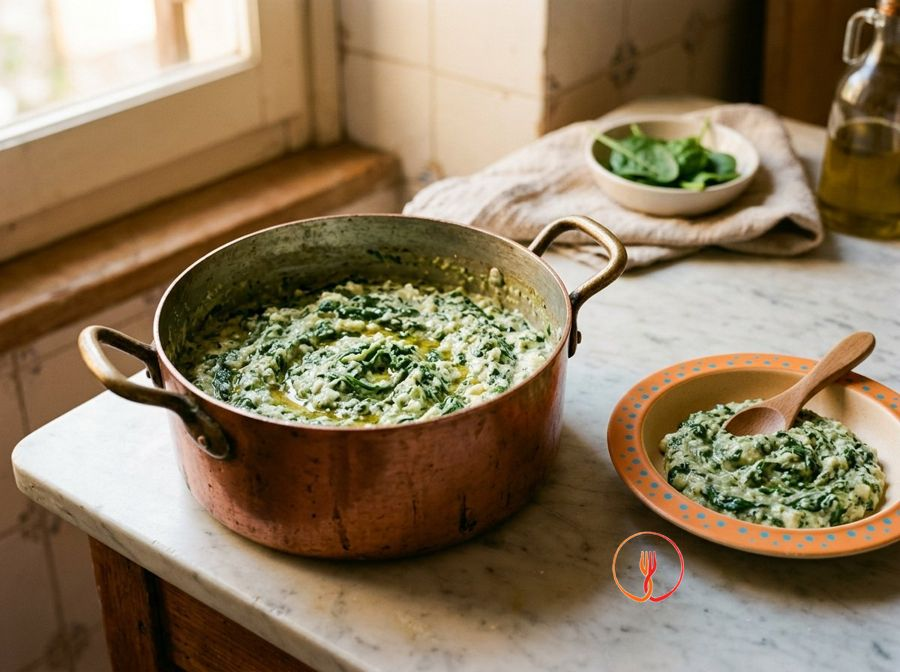

Ricotta and spinach baby food
Creamy baby food rich in calcium, from 8 months.
A creamy and delicate meal, ideal for the early stages of weaning thanks to the rice cream base. The sweet taste of ricotta pairs perfectly with the freshness of steamed spinach.
Ingredients
- Fresh spinach (cleaned)50 g
- Fresh cow's milk ricotta30 g
- Instant rice cream20 g
- Vegetable broth (salt-free)180 ml
- Extra virgin olive oil5 g
Allergens
Milk
May contain traces of: Celery.
Method
- Thoroughly wash the spinach leaves under running water and remove the tough stems.
- Steam the spinach for about 5-7 minutes until tender to preserve micronutrients.
- Drain the spinach well and blend with an immersion blender until a smooth puree is obtained.
- Heat the vegetable broth in a small saucepan to a temperature of about 60-70°C (avoid a rolling boil).
- Slowly whisk the rice cream into the hot broth, stirring vigorously to prevent lumps.
- Add the spinach puree to the rice cream and incorporate well.
- Soften the ricotta with a spoon to make it creamy, then fold it into the baby food, mixing gently.
- Finish with the raw extra virgin olive oil and check that the temperature is suitable for consumption (approx. 37°C).
Tips
- Drain the spinach thoroughly after cooking to prevent the meal from becoming too watery.
- Mix the ricotta at room temperature to incorporate it more easily into the hot rice cream.
- You can store the spinach puree in the refrigerator for 24 hours in an airtight container.
Variations
- Substitute the rice cream with corn and tapioca cream for a slightly different texture.
- Use goat ricotta if you prefer a more distinct and characteristic flavor.
Nutrition facts (estimate)
| Per serving (250 g) | Per 100 g | |
|---|---|---|
| Energy | 761 kJ / 182 kcal | 304 kJ / 73 kcal |
| Protein | 5.4 g | 2.2 g |
| Carbohydrates | 18 g | 7.4 g |
| of which sugars | 1.2 g | 0.5 g |
| Fat | 9.2 g | 3.7 g |
| of which saturates | 3.8 g | 1.5 g |
| Fibre | 1.8 g | 0.7 g |
| Salt | 0.1 g | 0.04 g |
AI estimates based on average CREA / USDA data: indicative only, not a substitute for medical or dietitian advice.
Open the recipe in the app for the shopping list, ingredient sheets and nearby shops.